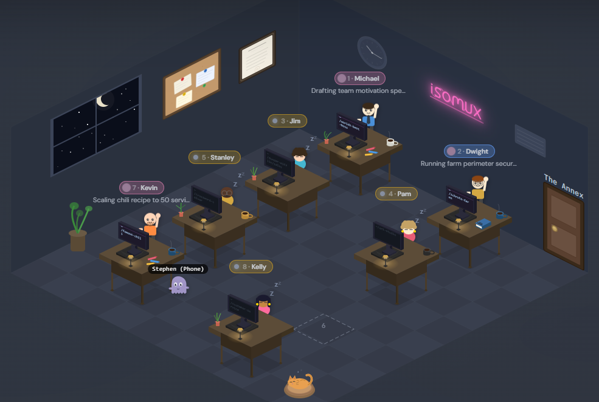

Friction going from 1 Claude Code to 4+? Isomux is your agent office. Cute in a useful way.

http://YOUR_TAILSCALE_ALIAS:4000rm -rf, git reset --hard, and other footguns out of the boxYou need Bun (v1.2+) and the Claude Code CLI installed and authenticated with a Claude Pro or Max subscription.
# Install Bun curl -fsSL https://bun.sh/install | bash # Install Claude Code npm install -g @anthropic-ai/claude-code # Launch Claude Code, then type /login to authenticate claude
git clone https://github.com/nmamano/isomux.git cd isomux bun install bun run dev
Visit http://localhost:4000 in your browser. Click an empty desk to spawn your first agent.
Run Isomux on a Mac Mini or any always-on box/server. Talk to your agents from your laptop, your phone, or anywhere via Tailscale. Same conversations, instantly sync'd via WebSocket.
Hint: save time by asking your agent to set it up for you.
This auto-rebuilds the UI on each start and restarts on failure.
mkdir -p ~/.config/systemd/user cat > ~/.config/systemd/user/isomux.service <<'EOF' [Unit] Description=Isomux - Isometric Office Manager After=network.target [Service] Type=simple WorkingDirectory=/home/YOUR_USER/isomux ExecStartPre=/home/YOUR_USER/.bun/bin/bun run build:ui ExecStart=/home/YOUR_USER/.bun/bin/bun run server/index.ts Restart=always RestartSec=3 Environment=PATH=/home/YOUR_USER/.bun/bin:/usr/local/bin:/usr/bin:/bin [Install] WantedBy=default.target EOF
systemctl --user daemon-reload
systemctl --user enable --now isomux
# Check status
systemctl --user status isomux
By default, systemd user services stop when you log out. Enable lingering so Isomux keeps running.
sudo loginctl enable-linger $USER
Install Tailscale on the server, your laptop, and your phone. Once connected, every device can reach Isomux at the server's Tailscale IP — same URL everywhere, instantly in sync.
curl -fsSL https://tailscale.com/install.sh | sh
sudo tailscale up
# Find your Tailscale IP
tailscale ip -4
Bonus: Instead of remembering an IP, rename your machine in the Tailscale admin console to something friendly, like my-mac-mini.
Open the same URL from any device on your Tailnet — laptop gets the full office view, phone gets a touch-optimized agent list:
http://my-mac-mini:4000